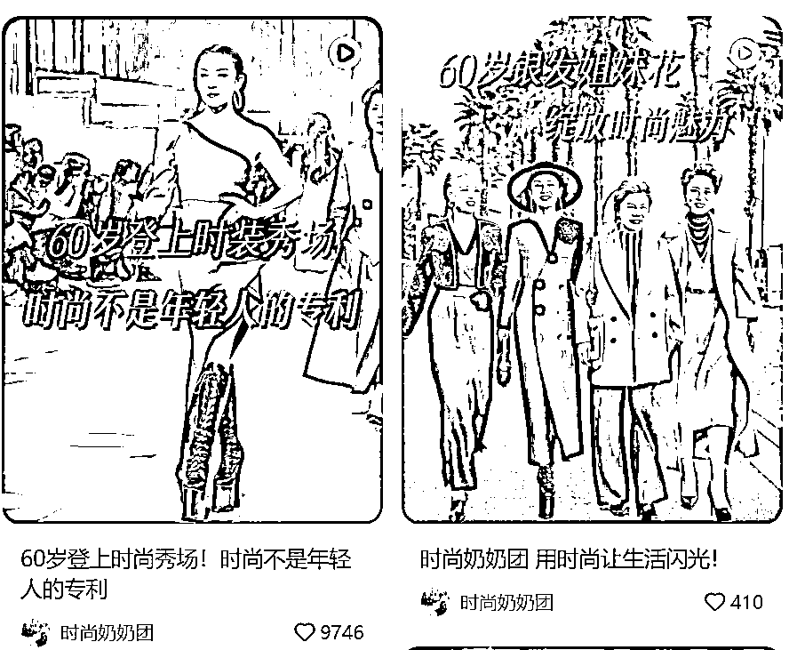
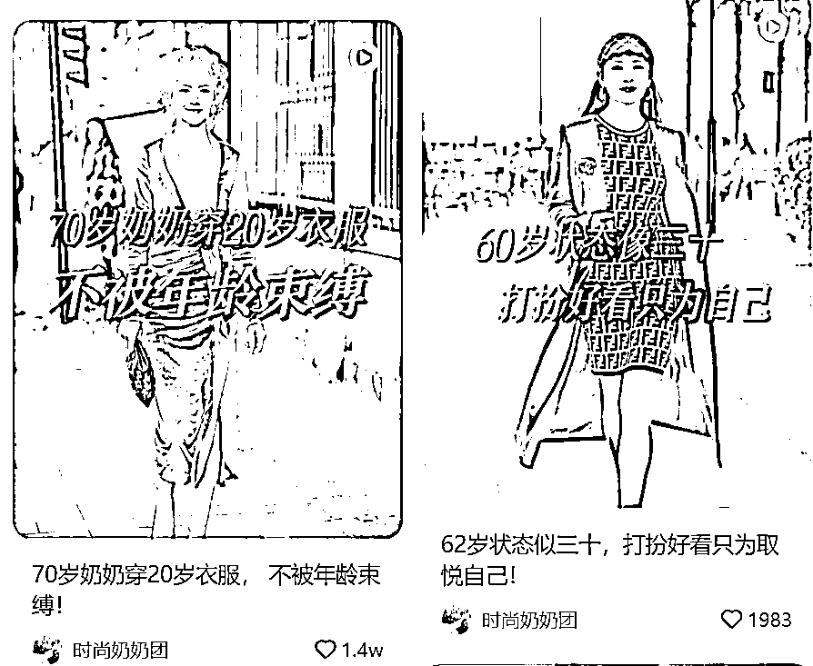
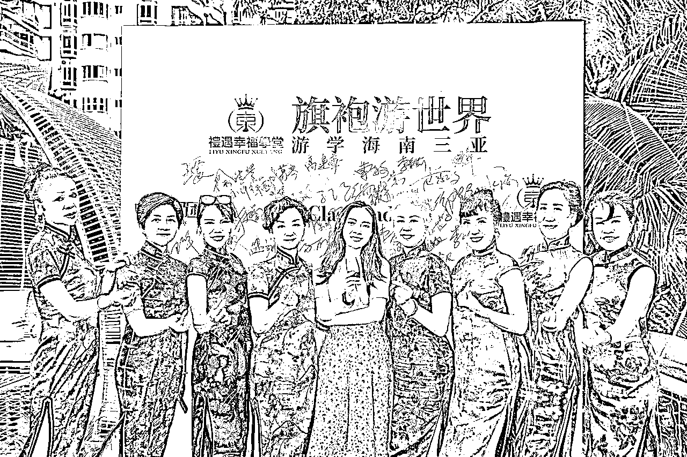
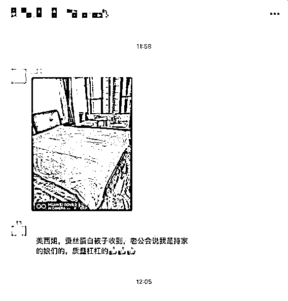
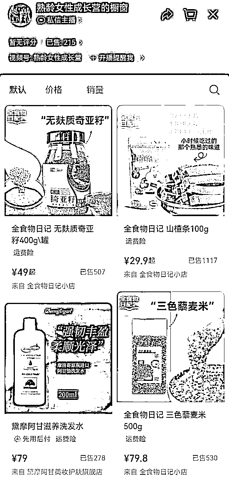
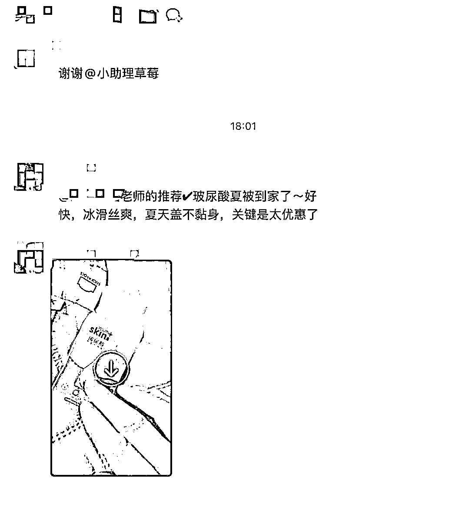
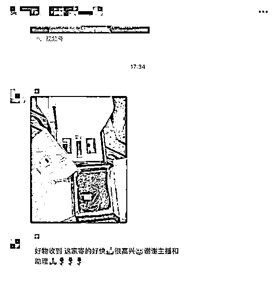
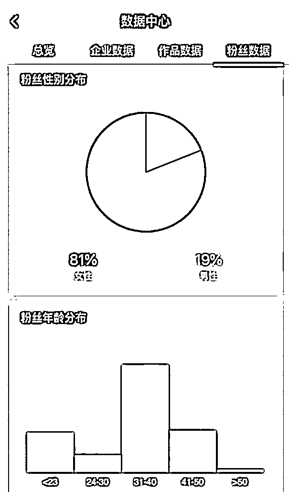

风向标拆解第3期--带着爸妈去巡演，老年研学需求被满足的机会如何--吞吞Tz
来源：https://bxuta4nuw1a.feishu.cn/docx/F1BZd0h1koVm8PxUH9lcVS1Nneh
拆解大纲
机会2：带着爸妈去巡演，老年研学需求被满足的机会如何
教老年人书法，教老年人歌唱，教老年人朗诵，教老年人走秀……
如果你起得足够早就会发现，大把大把的直播间，用这些内容填补老年人退休后的空白时间。
就拿走秀举例，他们不单纯教中老年人走秀，还给他们提供舞台，像专业团队一样去表演，在提供技能的同时，也为他们提供情绪价值。
这一届老年人有钱有闲，由此延伸出的老年研学还有很多。
我们不妨看看，他们是怎么切入这个细分赛道，做高客单的？又是如何吸引老年学员的的？
课程设计上，又有什么讲究？后端又是如何交付的？一单能赚多少钱？希望通过拆解能形成进一步的结论。
找案例 分析问题
✅流量怎么运营？
✅产品怎么解决？
✅利润怎么核算？
✅项目如何做&如何放大？
案例 中老年走秀
拆解原因
- 老年群体数量持续扩大，消费能力同步提升，“60后”、“70后”持续步入老年，其有更将的消费支付能力。同时，有钱有闲是这些“新老人”的显著特点，旅游、网购、养生、社交……除了基本的物质需求，他们更追求精神上的富足，老年人正在涉足更多的消费场景，为银发经济带来了新的机遇。
- 新老人的需求主要有这几点：1、追求新自我——退休时间多了想要体验家庭之外的生活场所，追求新的生活状态；2、寻找新身份——有时间重新培养自己的兴趣，建立新的社交圈，结交志趣相投的朋友；3、不认老、不服老——消费态度逐渐年轻化，追求别人的“赞许”，渴望通过新的技能、体验新事物来克服年龄焦虑。
基本情况
账号：时尚奶奶团
类目：中老年走秀
带货形式：通过小红书、抖音、视频号发视频，日常更新，打造老年人与时尚“老与新”的差异感，开直播卖课。
需求
对标人群：40+熟龄女性
主要需求：变美，缓解年龄焦虑，有展示的舞台，获得荣誉感
流量
- 自然流量 在各平台持续发布老年人走秀的视频 打造出明星奶奶吸引对标用户
- 【内容形式】打破老年人刻板印象 “70岁年龄30岁状态” 强调反差感
- 【拍摄形式】真人出镜，背景为老年走秀，标题为不被年龄束缚


产品
训练营 365/年（社群，两张写真照，80节课程-形体、身心、化妆、护肤、摄影、直播、短视频，线下见面会）
- 衍生产品：时尚奶奶团珠宝-卖珍珠（23年3月停更）
为熟龄女性提供舞台空间，可以走秀、表演、签字等，满足其变漂亮、想展示的荣誉感。
- 中老年MCN：签约，打造中老年独立IP -黛艺、周媚、于书等





项目开展
- 一开始在主流平台吸引粉丝，主要为年轻人，后来在微信视频号、美篇、糖豆等中老年群体使用频率高的平台，调整粉丝结构

- 线上引流-线下推广，线上多矩阵号招募会员，线下形成用户裂变
- 定期请明星奶奶做分享，在见面会上邀请签约（疑似还有合伙人模式）